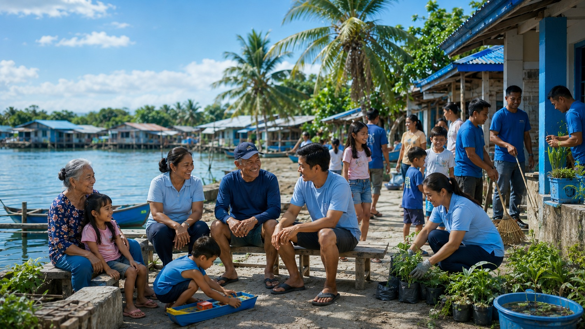
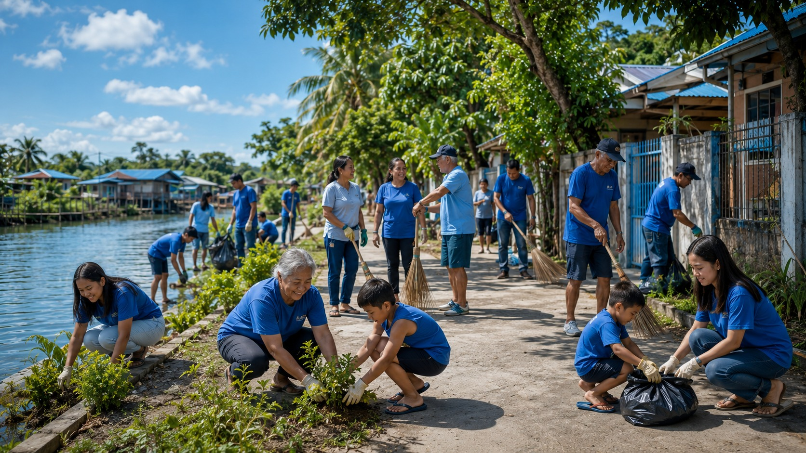
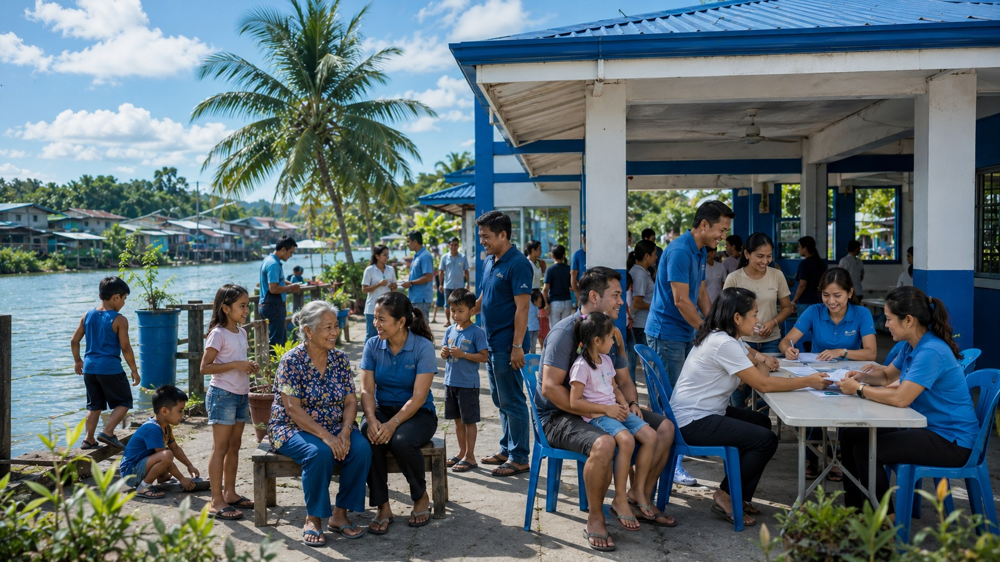

About Barangay Hulo
Learn about the history, profile, mission, vision, and community of Barangay Hulo.
Barangay History
Barangay Hulo is a small, closely-knit community in the coastal municipality of Obando, Bulacan, with a population of about 2,503. Originally a secluded 200-meter site situated along the river and ending at local fishponds, it was historically called Hulong Quibadia before eventually separating from San Pascual to become a full-fledged barangay.
The barangay has a strong tradition of bayanihan, local service, and family-centered community life. The barangay website is designed to help residents access information faster and support transparency in local governance.



Mission
To provide responsive, transparent, and inclusive public service that supports the welfare, safety, and development of every resident.
Vision
A peaceful, progressive, healthy, and united Barangay Hulo where residents actively participate in community development.
Barangay Profile
Key facts and details about Barangay Hulo, Obando, Bulacan.
Location Overview
Barangay Hulo is part of Obando, Bulacan and serves residents through local governance, public assistance, peace and order programs, and community services.